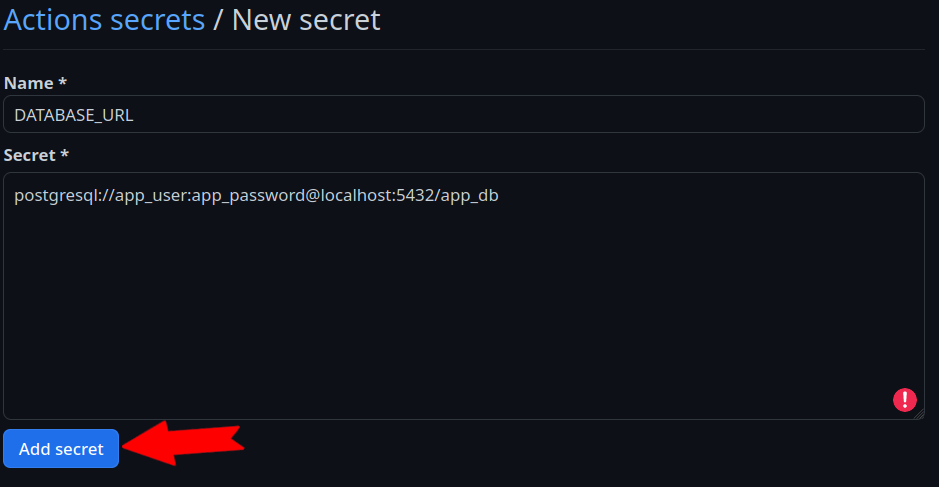
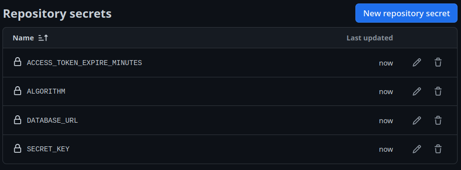

Automatizando os testes com Integração Contínua (CI)
Objetivos da aula:
- Compreender a prática de Integração Contínua (CI) e sua importância no processo de desenvolvimento de software.
- Aprender a usar o GitHub Actions para criar workflows de CI que automatizem a execução de testes a cada commit.
- Configurar um pipeline de CI para nossa aplicação FastAPI que execute testes automaticamente.
- Reconhecer a importância de manter uma cobertura de testes abrangente e consistente.
Caso prefira ver a aula em vídeo
Esse aula ainda não está disponível em formato de vídeo, somente em texto!
Na aula anterior, preparamos nossa aplicação para execução em containers Docker, um passo fundamental para replicar o ambiente de produção. Agora, vamos garantir que nossa aplicação mantenha sua integridade a cada mudança, implementando Integração Contínua.
Integração Contínua (CI)
Integração Contínua (CI) é uma prática de desenvolvimento que envolve a integração regular do código-fonte ao repositório principal, acompanhada de testes automatizados para garantir a qualidade. O objetivo dessa prática é identificar e corrigir erros de forma precoce, facilitando o desenvolvimento contínuo e colaborativo. Pois, caso alguém esqueça de rodar os testes ou exista algum problema na integração entre dois commits, ou em algum merge, isso seja detectado no momento em que a integração contínua é executada.
GitHub Actions
Entre as ferramentas disponíveis para CI, o GitHub Actions é um serviço do GitHub que automatiza workflows dentro do seu repositório. Você pode configurar o GitHub Actions para executar ações específicas — como testes automatizados — cada vez que um novo código é commitado no repositório.
Exemplo de workflow
Workflows no GitHub Actions começam com a construção de um ambiente (escolher um sistema operacional e instalar suas dependências) e criar diversos passos (steps em inglês) para executar todas as etapas que fazemos no nosso computador durante o desenvolvimento. É uma forma de garantir que o sistema funciona em um ambiente controlado. Dessa forma, todas às vezes que subimos o código para o repositório (damos push) esse ambiente e a sequência de passos será executada.
Por exemplo, como nosso sistema usará um sistema operacional GNU/Linux, podemos selecionar uma distribuição como Ubuntu para executar todos os passos da execução dos nossos testes. Isso inclui diversas etapas como preparar o banco de dados, ler as variáveis de ambiente, instalar o python e o poetry, etc.
Antes de mergulharmos na configuração do YAML, vamos visualizar o processo de construção do nosso ambiente de CI com um fluxograma. Este diagrama mostra os passos essenciais, desde a instalação do Python até a execução dos testes, ajudando a entender a sequência de operações no GitHub Actions.
flowchart LR
Push -- Inicia --> Ubuntu
Ubuntu -- Execute os --> Passos
Ubuntu --> Z[Configure as variáveis de ambiente]
subgraph Passos
A[Instale a versão 3.11 do Python] --> B[Copie os arquivos do repositório para o ambiente]
B --> C[Instale o Poetry]
C --> D[Instale as dependência do projeto com Poetry]
D --> E[Poetry execute os testes do projeto]
end
Ubuntu -- Inicie o banco de dados --> PostgresCom o fluxograma em mente, nosso objetivo de aula é traduzir esses passos para a configuração prática no GitHub Actions. Agora que temos uma visão clara do que nosso workflow envolve, nos aprofundaremos em como transformar essa teoria em prática.
Configurando o workflow de CI
As configurações dos workflows no GitHub Actions são definidas em um arquivo YAML localizado em um path especificado pelo github no repositório .github/workflows/. Dentro desse diretório podemos criar quantos workflows quisermos. Iniciaremos nossa configuração com um único arquivo que chamaremos de pipeline.yaml:
| .github/workflows/pipeline.yaml | |
|---|---|
Basicamente um arquivo de workflow precisa de três componentes essenciais para serem definidos:
- Um nome para o workflow (
name); - Uma condição de execução (a chave
on) para sabermos o que iniciará o processo de workflow; e - Um
job: Onde escolheremos um sistema e descreveremos a lista de passos para serem executados.
Nesse bloco de código definimos que toda vez em que um push ou um pull_request ocorrer no nosso repositório o Pipeline será executado. Esse workflow tem um job chamado test que roda na última versão do Ubuntu runs-on: ubuntu-latest. Nesse job chamado test temos uma lista de passos para serem executados, os steps.
O único step que definimos é a instalação do Python na versão "3.11.1":
Nesse momento, se executarmos um commit do arquivo .github/workflows/pipeline.yaml e um push em nosso repositório, um workflow será iniciado.
Nisso, podemos ir até a página do nosso repositório no github e clicar na aba Actions, isso exibirá todas às vezes que um workflow for executado. Se clicarmos no wokflow seremos levados a página dos jobs executados e se clicarmos nos jobs, temos uma descrição dos steps executados:

{kind=link}
{kind=link}
Isso nos mostra que tudo que configuramos no arquivo pipelines.yaml foi executado pelo actions no momento que em executamos um push no git.
Agora que temos essa visão geral de como o Actions monta e executa workflows, podemos nos concentrar em construir o nosso ambiente.
Construção do nosso ambiente de CI
Para executar nossos testes no workflow, precisamos seguir alguns passos essenciais:
- Instalar o Python: fundamental para executar nosso código e testes, por ser a linguagem base da nossa aplicação.
- Instalar o Poetry: pois toda a nossa aplicação e dependências foram construídas com ele.
- Instalar as dependências do projeto: farão com que todas as bibliotecas necessárias estejam disponíveis para a execução dos testes.
- Executar os testes: passo crucial para validar a integridade e funcionalidade do código antes de integrá-lo ao repositório principal.
flowchart LR
Python["1: Python instalado"] --> Poetry["2: Poetry instalado"]
Poetry --> Deps["3: Instalar as dependências via Poetry"]
Deps --> Testes["4: Executar os testes via Poetry"]Cada um desses passos contribui para estabelecer um ambiente de CI robusto e confiável, assegurando que cada mudança no código seja validada automaticamente, mantendo a qualidade e a estabilidade da nossa aplicação.
Para isso, devemos criar um step para cada uma dessas ações no nosso job test. Desta:
| .github/workflows/pipeline.yaml | |
|---|---|
Para testar essa implementação no Actions, temos que fazer um commit1, para executar o trigger do CI:
git add .
git commit -m "Adicionando passos para executar os testes no CI"
git push
Assim, podemos avaliar o impacto desses passos no nosso workflow:
{kind=link}
Se analisarmos com calma o resultado, veremos que a execução do nosso workflow apesenta um erro de execução. O erro está descrito na linha 12: Poetry could not find a pyproject.toml file in <path> or its parents. Se traduzirmos de maneira literal, a linha nos disse Poetry não encontrou o arquivo pyproject.toml no <path> ou em seus parentes.
Para solucionar esse problema, adicionaremos um passo antes da execução dos testes para copiar o código do nosso repositório para o ambiente do workflow. O GitHub Actions oferece uma ação específica para isso, chamada actions/checkout. Vamos incluí-la como o primeiro passo:
| .github/workflows/pipeline.yaml | |
|---|---|
Para testar a execução desse passo faremos um novo commit para triggar o Actions:
Com isso, o erro anterior deve ser resolvido e teremos os testes sendo executados no workflow:
{kind=link}
Após resolver este problema, nos deparamos com outro desafio. Evidenciado no bloco a seguir:
ImportError while loading conftest '/home/runner/work/<path>/tests/conftest.py'.
tests/conftest.py:6: in <module>
from fast_zero.app import app
fast_zero/app.py:3: in <module>
from fast_zero.routes import auth, todos, users
fast_zero/routes/auth.py:8: in <module>
from fast_zero.database import get_session
fast_zero/database.py:6: in <module>
engine = create_engine(Settings().DATABASE_URL)
../../../.cache/pypoetry/virtualenvs/fast-zero-IubsqyUK-py3.11/lib/python3.11/site-packages/pydantic_settings/main.py:61: in __init__
super().__init__(
E pydantic_core._pydantic_core.ValidationError: 4 validation errors for Settings
E DATABASE_URL
E Field required [type=missing, input_value={}, input_type=dict]
E For further information visit https://errors.pydantic.dev/2.1.2/v/missing
Erro completo no CI
{kind=link}
Ao iniciar a execução dos testes, encontramos um erro relacionado à nossa classe settings.Settings. Isso ocorreu porque as variáveis de ambiente necessárias, como DATABASE_URL, não estavam definidas no workflow do CI. Este problema é comum quando as variáveis do arquivo .env, que utilizamos localmente, não são transferidas para o ambiente de CI.
Configuração de variáveis de ambiente no Actions
Como vimos anteriormente, nossa configuração de CI encontrou um problema devido à ausência de variáveis de ambiente. Para resolver isso, utilizaremos uma funcionalidade dos repositórios do GitHub chamada 'Secrets'. Os 'Secrets' são uma maneira segura de armazenar informações confidenciais, como variáveis de ambiente, de forma criptografada. Eles são acessíveis dentro do nosso workflow, permitindo que o GitHub Actions utilize esses valores sem expô-los publicamente.
Definindo Secrets no Repositório
Para definirmos as variáveis de ambiente como 'Secrets', temos duas alternativas. A primeira é acessar a aba Settings -> Secrets and variables do nosso repositório no GitHub. Neste local, podemos inserir manualmente cada 'Secret', como URLs de banco de dados e chaves secretas.
A segunda alternativa é utilizar o CLI do GitHub (gh) para adicionar todas as variáveis de ambiente que temos no nosso arquivo .env. Isso pode ser feito com o seguinte comando:
Este comando pega todas as variáveis de ambiente do arquivo .env e as configura como 'Secrets' no seu repositório GitHub.
Configurando Secrets pela Interface Web
Se preferir configurar 'Secrets' pela interface web do GitHub, siga estes passos:
Acesse Settings no seu repositório GitHub. Em seguida clique na guia "Secrets and variables". Após isso clique em "New Repository secret":
{kind=link}
Para adicionar um novo scregredo no campo Name colocamos o nome de um de nossas variáveis de ambientes. No campo Secret adicione o valor de uma variável. Como, por exemplo:

{kind=link}
Em seguida clique em Add secret.
Após adicionar todos os segredos, sua página de segredos deve se parecer com isso: 
{kind=link}
Implementação no Arquivo YAML
Após definir as 'Secrets', o próximo passo é integrá-las ao nosso arquivo de workflow (.github/workflows/pipeline.yaml). Aqui, utilizamos uma sintaxe especial para acessar os valores armazenados como 'Secrets'. Cada 'Secret' é mapeado para uma variável de ambiente no job do nosso workflow, tornando esses valores seguros e acessíveis durante a execução do workflow. Vejamos como isso é feito:
| .github/workflows/pipeline.yaml | |
|---|---|
Neste trecho de código, a sintaxe ${{ secrets.NOME_DA_VARIAVEL }} é usada para referenciar os 'Secrets' que definimos no repositório. Por exemplo, secrets.DATABASE_URL buscará o valor da 'Secret' chamada DATABASE_URL que definimos. Assim que o workflow é acionado, esses valores são injetados no ambiente do job, permitindo que nosso código os acesse como variáveis de ambiente normais.
Essa abordagem não só mantém nossos dados confidenciais seguros, mas também nos permite gerenciar configurações sensíveis de forma centralizada, facilitando atualizações e manutenção.
Atualizando o Workflow
Com as 'Secrets' agora configuradas, precisamos atualizar o nosso workflow para incorporar essas mudanças. Isso é feito por meio de um novo commit e push para o repositório, que acionará o workflow com as novas configurações.
git add .
git commit -m "Adicionando as variáveis de ambiente para o CI"
git push
A execução do workflow com as novas 'Secrets' nos permitirá verificar se os problemas anteriores foram resolvidos.
{kind=link}
Como podemos ver, agora os testes começam a ser executados, porém, eles falham por não encontrar o banco de dados disponível.
======================= short test summary info ========================
ERROR tests/test_app.py::test_root_deve_retornar_200_e_ola_mundo - sqlalchemy.exc.OperationalError: (psycopg2.OperationalError) connection to server at "localhost" (::1), port 5432 failed: Connection refused
Is the server running on that host and accepting TCP/IP connections?
connection to server at "localhost" (127.0.0.1), port 5432 failed: Connection refused
Is the server running on that host and accepting TCP/IP connections?
(Background on this error at: https://sqlalche.me/e/20/e3q8)
!!!!!!!!!!!!!!!!!!!!!!!!!! stopping after 1 failures !!!!!!!!!!!!!!!!!!!!!!!!!!!
===================== 1 warning, 1 error in 0.98s ======================
A mensagem Is the server running on that host and accepting TCP/IP connections? traduzida de forma literal quer dizer "O servidor rodando está aceitando conexões TCP/IP?". Isso quer dizer que houve uma tentativa de comunicação com localhost:5432, porém, não conseguiu obter uma resposta. Para corrigir esse comportamento teremos que partir para a configuração do postgres no workflow.
Adicionando serviços ao Github Actions
Um 'serviço' no contexto do GitHub Actions é tipicamente um contêiner Docker que é iniciado com o nosso workflow. Esses serviços podem incluir bancos de dados, caches, ou qualquer outra dependência externa que nosso aplicativo possa precisar durante a execução do CI.
Na aula passada (09), realizamos uma importante atualização nos nossos testes: a transição para o uso do PostgreSQL. Para que nossos testes no ambiente de CI reflitam esta mudança, precisamos incluir o PostgreSQL como um serviço no nosso workflow do GitHub Actions.
Adicionando suporte ao PostgreSQL
Para adicionar o serviço PostgreSQL ao CI, temos que criar uma seção chamada services em nosso arquivo .github/workflows/pipeline.yaml. Aqui, utilizamos a imagem Docker oficial do PostgreSQL e a configuramos como uma dependência essencial do nosso CI. A configuração define as variáveis de ambiente necessárias para o banco de dados e expõe a porta padrão do PostgreSQL:
Dessa forma, no momento em que o CI for executado, ele iniciará um serviço postgres que pode ser usado durante o período de execução dos nossos testes. Como eles já estão configurados para isso e já temos as variáveis de ambiente apontando para o caminho do postgres, em nosso próximo commit já podemos ver os testes em ação:
{kind=link}
Este sucesso indica que nosso pipeline agora está corretamente configurado com o PostgreSQL, preparando o terreno para que cada push ou pull request no nosso repositório seja validado em um ambiente que espelha de perto nossa configuração de produção.
Caso queira ver o arquivo completo
Como o arquivo foi apresentado em pedaços até esse momento, é sempre importante ter uma visualização do arquivo completo para podermos validar se escrevemos tudo corretamente:
Conclusão
Através deste módulo sobre Integração Contínua com GitHub Actions, ganhamos uma compreensão sólida de como a CI é vital no desenvolvimento moderno de software. Vimos como o GitHub Actions, uma ferramenta poderosa e versátil, pode ser utilizada para automatizar nossos testes e garantir a qualidade e estabilidade do código a cada commit. Esta prática não apenas otimiza nosso fluxo de trabalho, mas também nos ajuda a identificar e resolver problemas precocemente.
Com a habilidade de integrar serviços como o PostgreSQL, nosso workflow de CI agora reflete mais precisamente o ambiente de produção. Isso nos dá a confiança de que nosso código funcionará conforme esperado quando for lançado.
No próximo módulo, o foco será na preparação da nossa aplicação FastAPI para o deployment em produção. Exploraremos as etapas necessárias e as melhores práticas para tornar nossa aplicação pronta para o uso no mundo real, abordando desde configurações até estratégias de deployment eficazes.